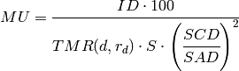
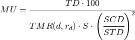
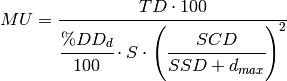
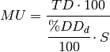
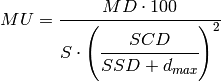
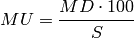

Treatments that are not carried out at a SSD of 100 cm are best calculated using TMR’s, as percentage depth dose tables are not usually available for other SSD’s. For a single field the relation between monitor units and dose to the isocentre is as follows:
(1)
where:
For the sake of simplicity no tray, table or compensator factors have been included in the equation given above. When a factor is used, divide through by the appropriate factor.
For variable SSD treatment equation (1) can be extended to:
(2)
where:
While fixed SSD (SSD = 100cm) treatments can certainly be checked using the methods outlined above the medical physicist may find it easier to use percentage depth doses (%DD). This is a more suitable quantity for calculations involving SSD techniques. The monitor units MU necessary to deliver a tumour dose TD in Gy at a depth d for a field size r is:
(3)
When the SSD = 100 cm and SSD + dmax = SCD then equation (3) simplifies to:
(4)
Normally the dose at maximum build-up prescription is not used for isocentric treatments, particularly for single beams. However, should such a situation occur the isocentric technique may be adapted as follows:
The accelerator is calibrated to give 1 MU/cGy at maximum build-up for a 10x10 field at the SCD, i.e. TMR(dmax,10) = 1.0. For any other field size and SSD equation (2) becomes:
(5)
where MD is the dose at maximum build-up in Gy for a single beam.
When the SSD is fixed at 100 cm the situation is even simpler. Equation (5) becomes:
(6)